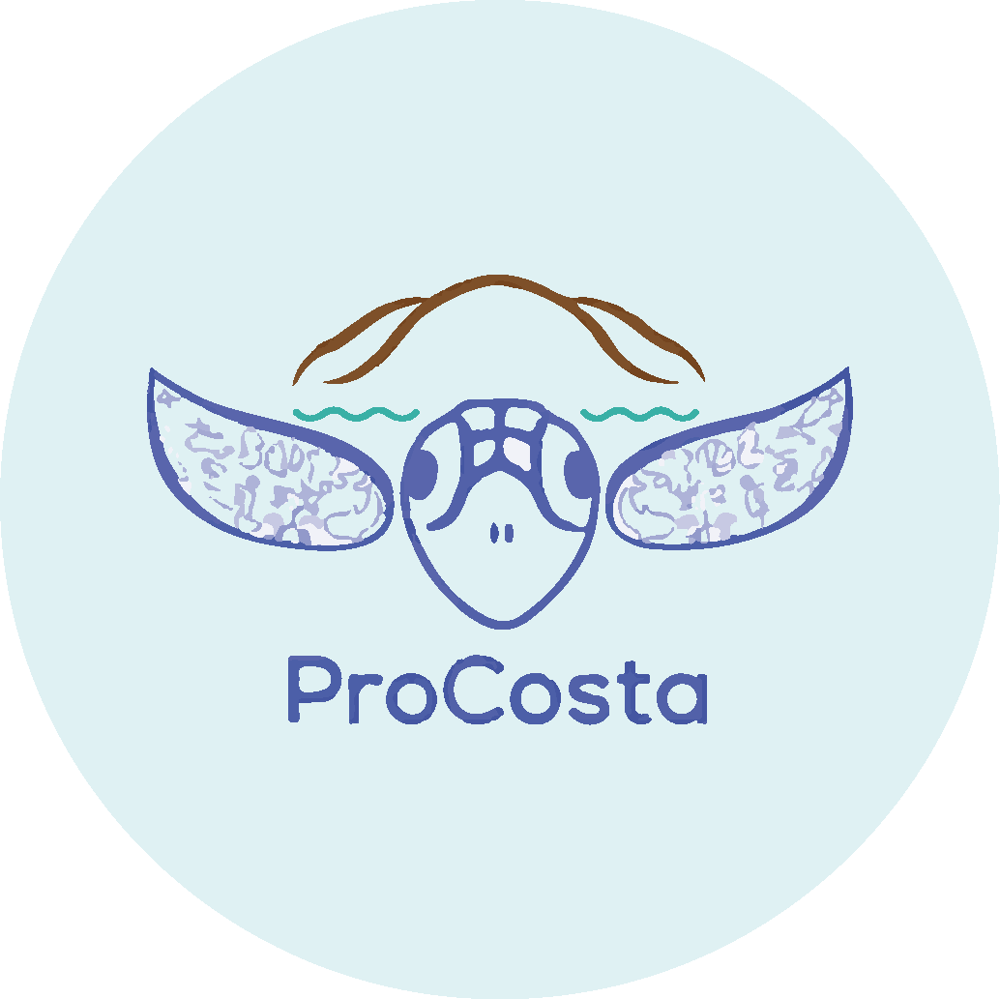

Creamos un listado con algunas organizaciones de diferentes partes del mundo con nuestros
mismos intereses, apoyar, ayudar y preservar la vida de las tortugas marinas, así como la de
tantos otros animales acuáticos victimas de la contaminación.
A continuación te presentamos sus objetivos y redes sociales para que logres comunicarte y
apoyar.
Apoyar para mejorar
Oranizaciones

Asociación ProCosta
País: El Salvador
Asociación ProCosta es una ONG salvadoreña sin fines de lucro que busca mejorar el bienestar de la biodiversidad, los ecosistemas y las comunidades locales a lo largo de la costa de El Salvador y otros países de Centroamérica, con énfasis en la investigación y conservación de las tortugas marinas y su hábitat.
Grupo Tortuguero de las Californias
País: Estados Unidos, México
Grupo Tortuguero de las Californias es una red de pescadores, investigadores, personas de comunidades costeras, estudiantes, grupos comunitarios, asociaciones civiles, jóvenes y más en general gente interesada en la conservación de las tortugas marinas y sus hábitats.
Asociación Paso Pacífico
País: Costa Rica, Nicaragua
Paso Pacifico busca restaurar y proteger a los ecosistemas de la vertiente pacifica de la region mesoamericana. Estas playas son protegidas por un equipo de guardaparques comuitarios, profesionalizados y trabajando de tiempo completo en el monitoreo de tortugas marinas.
ACOREMA
País: Perú
ACOREMA se dedica a la investigación y conservación de la biodiversidad marina, con énfasis en el estudio de especies amenazadas (cetáceos, tortugas marinas, pingüino de Humboldt, nutria marina) y en iniciativas de educación, sensibilización, comunicación e interpretación ambiental para crear conciencia y promover la participación de la población en acciones a favor de los recursos marino, costeros y de una mejor calidad de vida.
Fundación Tortugas del Mar
País: Colombia
La Fundación Tortugas del Mar está constituida legalmente en Colombia desde el año 2014, como una Organización No Gubernamental (ONG) y sin ánimo de lucro. Nuestra misión es contribuir al conocimiento, recuperación y conservación de las poblaciones de tortugas marinas y de sus ecosistemas asociados en las áreas más críticas del Caribe y Pacífico colombiano, impulsada por la investigación científica, la educación ambiental y la colaboración comunitaria e interinstitucional.